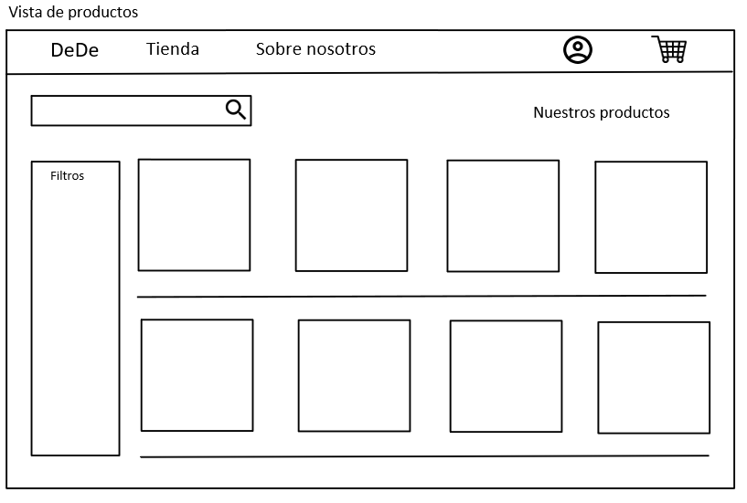

1. Introducción y Metas
El sistema se basa en una tienda de comida online, donde los clientes podrán realizar varias acciones: registros, log in, compras… y los administradores podrán modificar y eliminar productos existentes y añadir nuevos si lo necesitan. La seguridad de los clientes debe estar garantizada en todo momento, siguiendo para ello los principios SOLID.
1.1. Vista de Requerimientos
Algunos de los requisitos se extrajeron del propio enunciado de la práctica:
Los requisitos son los siguientes:
-
El sistema debe poder registrar nuevos usuarios y poder iniciar sesión para los ya existentes.
-
La interfaz de usuario deberá ser acogedora de cara a los clientes, para que ellos se sientan más cómodos a la hora de usar la aplicación.
-
El sistema debe poder ir calculando el coste total de los productos elegidos por el cliente.
-
El sistema tiene que poder procesar compras de los usuarios una vez estén registrados.
-
El sistema debe poder mostrar a un cliente registrado un historial con los pedidos que haya realizado.
-
El sistema debe, una vez terminado el pedido y antes de procesarlo, calcular el sobrecoste que puede tener el envío del producto dependiendo de donde se encuentre el domicilio del usuario.
-
El sistema debe mostrar los productos que hay disponibles y, como mínimo, separar productos de comida de los de bebida.
-
Se deben poder añadir nuevos productos.
-
Solo los administradores del bar podrán crear o eliminar (entre más operaciones) los productos, mientras que los clientes podrán interactuar con la aplicación para comprar los productos.
1.2. Metas de Calidad
-
Sencillez, tanto para el cliente como para el administrador debe ser sencillo utilizar la aplicación y desenvolverse con ella.
-
Testeable, el sistema debe poder probarse fácilmente en todas sus capas.
-
Eficiencia, los procedimientos de inicio de sesión, registro, compra, añadir o eliminar productos… deben poder realizarse en un periodo de tiempo razonable.
-
Usabilidad, las opciones dentro de la aplicación deben ser sencillas de aprender y de utilizar.
-
Seguridad, los datos deben ser seguros y consistentes en todo momento.
| Prioridad | Meta de Calidad | Escenario | Prioridad(Cliente/Arquitecto) |
|---|---|---|---|
1. |
Seguridad |
La aplicación deberá ser segura para todos los datos de los clientes, tomando para ello las medidas pertinentes. |
Alto / Alto |
2. |
Usabilidad |
Muy importante, la aplicación tendrá una serie de opciones (registro, añadir nuevos productos, compras…) las cuales deben ser sencillas de utilizar para todos. |
Alto / Alto |
3. |
Consistencia |
Los datos de los productos y de los clientes deben estar siempre actualizados y ser correctos. |
Medio / Alto |
4. |
Eficiencia |
Los usuarios no querrán estar esperando mucho tiempo para poder realizar sus compras, inicios de sesión… y lo propio con el administrador. Por ello es importante que la aplicación no tarde demasiado en realizar dichas operaciones. |
Alto / Medio |
5. |
Testeable |
Es importante poder probar todas las capas de la aplicación para poder corregir los errores de una manera rápida y eficaz. |
Bajo / Alto |
1.3. Partes interesadas (Stakeholders)
| Rol | Expectativas |
|---|---|
Arquitectos del Software |
Poder aplicar correctamente las diferentes herramientas que se nos proporcionan para crear una aplicación que contente a las demás partes interesadas. Es necesario que conozcan la arquitectura y sepan trabajar en ella. |
Desarrolladores |
Tener una documentación bien desarrollada y entender la arquitectura de manera correcta para poder aplicarla correctamente en la práctica. |
Profesores |
Sentirse orgullosos de que sabemos aplicar todo lo proporcionado en las clases de practicas y teoría y crear con ello una buena arquitectura. |
Clientes |
Poder entender y utilizar la aplicación correctamente de una manera sencilla y eficaz. |
Administradores |
Estar al tanto del bar y poder actualizarlo en caso de tener nuevos productos o algunos estén obsoletos. |
2. Restricciones de la Arquitectura
2.1. Alcance y contexto del sistema
Contexto: Es una aplicación para vender pinchos y bebida de forma online (o lo que es lo mismo, un bar). Tomaremos como ejemplo aplicaciones parecidas, como pueden ser las de comida rápida o restaurantes.
Alcance: El alcance del sistema es poder dotar a los clientes de una aplicación funcional para poder hacer sus pedidos y procesarlos correctamente. Es decir tener un sistema lo más parecido posible a una tienda de comida online.
2.2. Contexto técnico
Aquí se pueden encontrar las restricciones que se seguirán para desarrollar el proyecto en base a unos principios. Dentro de estas restricciones se encuentran las referidas al sistema, documentación…
| Restricción | Explicación |
|---|---|
SOLID |
Proporcionar a los usuarios un acceso de la aplicación a sus datos de manera consentida y así hacer que sea más seguro para ellos ya que los usuarios son propietarios de sus propios datos gracias al uso de PODs. |
React |
Es una manera sencilla de crear una interfaz de usuario y proporciona un mantenimiento más sencillo, un código más estable y un mayor rendimiento. |
GitHub |
Todo el proyecto quedará unificado en GitHub, donde crearemos varias ramas para encapsular las diferentes funcionales que implementemos. |
Arc42 |
Es una de las mejores documentaciones de cara a hacer una documentación técnica, como es nuestro caso. |
TypeScript |
Nos dota de un lenguaje más sólido y limpio frente a JavaScript, con lo que el código tendrá menos errores y podremos detectarlos primero. |
Docker |
Ejecutaremos nuestra aplicación en un host de Docker. |
2.3. Contexto Organizativas
Restricciones referidas al modelo organizativo que seguirán los integrantes del grupo durante todo el proyecto.
| Restricción | Explicación |
|---|---|
Reuniones |
Cada semana se realizará una reunión como mínimo donde se pondrá en común el trabajo realizado, que es lo que queda por hacer, que problemas tiene cada miembro… Todo esto quedará documentado en un acta el cual se subirá a GitHub. |
Issues y Pull Requests |
De cara a tener una buena organización, crearemos issues con las tareas que tenemos que hacer cada miembro del equipo. En cuanto a los Pull Requests, están diseñados para que un miembro (o varios) del equipo, puedan revisar el código de otro miembro del equipo antes de subirlos a una rama. |
Fecha de entrega |
Cada cierto tiempo tendremos que ir entregando una versión del proyecto, la cual debería ser funcional y cumplir con lo que hemos ido especificando en las issues. |
3. Alcance y Contexto del Sistema
3.1. Contexto de Negocio

El sistema permitirá al usuario hacer pedidos de los diferentes productos disponibles, pudiendo también, iniciar sesión con su propia cuenta mediante un proveedor de pods, que seguirá los principios SOLID. Dicho pod es quien se encarga de gestionar la información de los usuarios. Por otro lado, los datos de los productos serán almacenados por la base de datos.
-
Usuario: persona interesado en la tienda que quiera realizar una compra y poder gestionar su propia cuenta
-
DeDe: provee al usuario la interfaz necesaria para llevar a cabo todas las operaciones
-
Pod: suministra a la aplicación la información descentralizada del usuario
-
Base de datos: encargada de toda la persistencia de los datos que compondran la aplicación
3.2. Contexto Técnico
Como se ha mencionado anteriormente, la aplicación hará uso de la tecnología SOLID dirigida por Tim Berners-Lee para realizar un proyecto descentralizado. Esta proporcionará un pod a cada usuario permitiendo almacenar toda la información de cada uno, y se la proveerá a la aplicación. Para la implementación del proyecto se utilizarán tecnologías como REACT, para el desarrollo Frontend, y la base de datos MongoDB, para todo lo relativo a la persistencia de datos.
Tecnología |
Descripción |
React |
Biblioteca escrita en JavaScript desarrollada por Facebook para la creación de interfaces de usuario. |
TypeScript |
Lenguaje de programación libre y de código abierto desarrollado y mantenido por Microsoft. Es un superconjunto de JavaScript |
SOLID |
Proyecto descentralizado cuyo principal objetivo es que el usuario tenga el control de su privacidad. |
MongoDB |
Base de datos NoSQL open source que ofrece un modelo de datos flexible para organizar y almacenar todo tipo de datos |
4. Estrategia de solución
4.1. Decisiones tecnológicas
-
MERN como stack del proyecto, lo cual nos dará una base sólida sobre la que trabajar, tanto con la base de datos, Frontend y Backend, esto implica:
-
MongoDB como base de datos NoSQl.
-
Expres JS como framework de Node JS.
-
Framework React para crear las interfaces de usuario.
-
Material UI (MUI) como librería de React para la creación de componentes.
-
-
Node JS como entorno de ejecución.
-
Typescript como lenguaje de programación: MERN exige trabajar con JavaScript, pero Typescript añade una capa extra de tipado estático, que vendrá bien para prevenir errores.
-
-
SOLID para preservar la privacidad de los datos del usuario.
-
Github para el control de versiones
4.2. Decisiones acerca de la descomposición a alto nivel
Utilizaremos el Modelo-Vista-Controlador (MVC) como patrón principal, lo que nos permitirá separar la lógica de la presentación. Para asegurarnos de la accesibilidad, nos guiaremos a través de validadores WCAG 2.0 (Level AAA).
4.3. Decisiones en como alcanzar metas de calidad claves
Trabajo continuo sobre el proyecto a lo largo de su duración. Revisión (a través de Pull Request) del trabajo entre los integrantes del equipo.
4.4. Decisiones organizacionales
Se realizará una reunión semanal, utilizaremos Discord para la organización de reuniones no presenciales. Cada reunión tendrá un acta, la cual será subida a Github. También hemos optado por el uso de Issues y Kanban (GitHub) para la organización de tareas. Respecto a tareas específicas, todos los miembros del equipo trabajaremos en todos los aspectos del proyecto. Disponemos de 3 Kanbans, uno para cosas generales y los otros dos para tareas del Backend y Frontend. Cada uno dispone de 4 columnas: to do, in progress, done y merges
5. Vista de Bloques
5.1. Sistema General de Caja Blanca
El siguiente diagrama representa la estrucutra general del sistema y de qué servicios depende.
La aplicación, en una primera instancia, tendrá un solo actor interactuando, el usuario. Este realizará peticiones al sistema através de la vista. El sistema, a su vez, utilizará el sistema SOLID de pods y la base de datos para acceder a los datos que compondrán a la aplicación. La caja negra del diagrama representa las distintas capas del Modelo Vista Controlador.
5.1.1. Caja Negra 1
Nombre |
Responsabilidad |
Modelo |
Capa donde se gestionan los datos con los cuales opera el sistema, gestionando también los accesos y actualizaciones de los mismos |
Vista |
Contiene código que compondrá la interfaz de usuario de la aplicación, tratando con los datos pero no accediendo directamente a éstos |
Controlador |
La esencia del controlador es enlazar la vista con el modelo. Contiene la lógica que interpreta y le da sentido a las instrucciones realizadas por el usuario |
6. Runtime View
6.1. Escenario 1. Registrarse como un nuevo usuario
Para registrarse, el usuario deberá rellenar el formulario correspondiente. Una vez hecho, se guardarán en la base de datos solo los datos necesarios. El resto de datos personales serán almacenados en el POD.
6.2. Escenario 2. Iniciar sesión
El usuario deberá rellenar el formulario correspondiente para iniciar sesión. Los datos serán enviados y validados y finalmente se le notificará al usuario si ha introducido los datos correctamente.
6.3. Escenario 3. Realizar un pedido
Se empezarán a añadir los productos deseados al pedido y una vez se hayan añadido todos los productos necesarios, podrás finalizar el pedido y se enviará a la direccion proporcionada por el pod.
6.4. Escenario 4. Vista de productos
Una vez en la vista de tienda, se pueden realizar varias operaciones, como ver detalles, filtrar productos, buscar por nombre y añadir al carrito.
6.5. Escenario 5. Información sobre pods
Desde la vista de registro se puede navegar hasta una pantalla que contiene información sobre los pods que se utilizan en la aplicación.
7. Vista de Despliegue

8. Conceptos transversales
8.1. Modelo de dominio de la aplicación

| Nombre | Descripción |
|---|---|
POD |
Es el elemento encargado de almacenar toda la información del usuario, que con su permiso podremos utilizar para realizar el envío del pedido. Para ello tendrá que darnos su consentimiento mediante el log in de SOLID. |
Cliente |
Realizará el pedido y nos facilitará sus datos personales (nombre, DNI, dirección) para poder realizar el envío. |
Pedido |
Contendrá todos los productos que el cliente haya elegido, y serán enviados a la dirección correspondiente. |
Producto |
Puede ser un pincho (bocata), una bebida o todo lo que este a disposición del cliente para ser añadido al pedido. |
8.2. Interfaz de usuario



8.3. Seguridad
Es parte fundamental de la aplicación el intercambio de datos y el procesamiento de estos de forma segura. Parte de esta seguridad viene dada por el uso de SOLID, que almacena los datos asegurando su seguridad.
8.4. Pruebas funcionales
La aplicación deberá ser probada mediante el uso de tests creados para comporobar el funcionamiento, ayudándonos a determinar la correcta implementación de esta.
8.5. Privacidad
Se deverá mantener en todo momento la privacidad de los datos personales del usuario. Esto se hará gracias al uso de los PODs de SOLID, que nos permite almacenar datos de manera descentralizada. Nuestro equipo se compromete a no almacenar ninguno de estos datos sensibles en nuestra base de datos.
9. Decisiones de diseño
| Decisión | Importancia | Consecuencias | Justificación |
|---|---|---|---|
Uso de MERN Stack |
Muy alta dado que esta decisión marca las tecnologías y la forma en la que vamos a utilizarlas |
A pesar de que toda la aplicación dependa de esto, el uso de MERN nos proporciona una buena versatilidad a la hora de programar y una estructura de diseño completa |
Hemos decidido usarla debido a que nos proporciona una base sólido para la realización del proyecto y se ajusta a las necesidades del proyecto. |
MongoDB |
Todos lo relativo a los datos y a su gestión depende de esta decisión |
Un mal uso de la base de datos temprano puede traer consigo cambios muy grandes en el futuro |
Es más fácil de utilizar junto al resto de tecnologías seleccionadas que el resto de las bases de datos |
Temática de la tienda |
La aplicación ha de girar en torno a esta temática |
Si hubiera que cambiar la temática, habría que tocar diseños, clases, base de datos… |
Nos pareció una temática adecuada. |
Uso de SOLID |
Los datos del usuario serán tratados a través de pods, donde se guardará información del usuario, manteniendo así su privacidad. |
Si quisiéramos quitar SOLID, tendríamos que rehacer todo lo relacionado con la obtención de los datos del usuario |
Es una buena forma de preservar la privacidad del usuario y sus datos. |
10. Requerimientos de Calidad
10.1. Árbol de Calidad
10.2. Escenarios de calidad
Ref |
AQ |
Scenario |
Priority |
1 |
Eficiencia |
El tiempo de respuesta al usuario han de ser los mínimos posibles |
Alta, Alta |
2 |
Usabilidad |
Ha de ser intuitiva y fácil de usar para personas no técnicas |
Medio, Alta |
3 |
Privacidad |
El sistema ha de respetar la privacidad de los usuarios almacenando sus datos en PODs |
Alta, Alta |
4 |
Seguridad |
Deberá haber un grado de seguridad para que los usuarios no entren en una cuenta que no les pertenezca |
Media, Alta |
5 |
Accesibilidad |
La aplicación deberá se accesible siguiendo las recomendaciones WCAG 2.0 (Level AAA) |
Baja, Media |
6 |
Portabilidad |
La aplicación podrá ser ejecutada independientemente del dispositivo en el que se despliegue |
Baja, Baja |
7 |
Integridad |
Se deberá mantener en todo momento la integridad y consistencia de los datos que maneje la aplicación |
Arlta, Alta |
11. Riesgos y deuda técnica
Riesgo |
Descripción |
Uso de React |
Ningún miembro del equipo ha utilizado antes este framwork, por lo que tendremos que estar constantemente informándonos |
Uso de Typescrip |
En general tenemos algún conocimiento de Javascript, pero no creemos que sea el adecuado para este proyecto. |
Uso de MongoDB |
No estamos acostumbrados a integrar en una aplicación una base de datos no relacional, por lo que necesitamos documentarnos correctamente |
Uso de SOLID |
Actualmente es la tecnología que más desconocemos, por lo que tenemos que emplear parte de nuestro tiempo en investigar cómo funciona SOLID |
Tiempo |
Hay que entregar el proyecto en una fecha determinada, por lo que la organización del equipo ha de ser crucial para llegar a tiempo |
Trabajo en equipo |
El equipo cuenta con 5 personas, por lo que se ha de mantener una buena comunicación y organización en todo momento |
Seguridad |
Es imprescindible almacenar la información sensible de los usuarios en los PODS asegurando la seguridad de los mismos. |
Deuda Técnica |
Descripción |
Test |
Actualmente el proyecto no cuenta con test necesarios para cubrir toda la funcionalidad de la aplicación. |
Filtros |
El código actual que actualiza la lista de productos según filtros no está bien planificado y, con la llegada de más filtros, quedará un código demasiado extenso |
Clases grandes |
Tenemos clases con mucha información, lo que provoca que, en una modificación que les afecte, tendremos dificultades para codificarlos |
12. Glossary
| Término | Definición |
|---|---|
Stack |
Lista de todos los servicios tecnológicos utilizados para construir y ejecutar una sola aplicación |
NoSQl |
Base de datos no relacional (No tiene estructura fija) |
Framework |
Esquema o marco de trabajo que ofrece una estructura base para elaborar un proyecto con objetivos específicos |
Accesibilidad |
Práctica inclusiva de garantizar la accesibilidad a los sitios web, y que las herramientas y las tecnologías estén diseñados y desarrollados para que las personas con discapacidad puedan usarlas |
Pull Request |
Petición que el propietario de una rama de un repositorio hace al propietario del repositorio original para que este último incorpore los commits que están en la rama |
Pods |
Son las estructuras que utiliza Solid para almacenar datos |
RESTAPI |
Interfaz de programación de aplicaciones (API) que se ajusta a los límites de la arquitectura REST y permite la interacción con los servicios web de la misma. |
Consistencia |
Los datos que contenga la base de datos deberán ser siempre correctos y estar actualizados. |
MVC |
Patrón para separar la capa de lógica de la aplicación de la presentación de la misma. |
TypeScript |
Superconjunto de JavaScript que permite el uso de tipos estáticos y objetos basados en clases. |
Testeable |
Toda la aplicación deberá ser probada mediante pruebas en todas las capas que contenga la misma. |
MongoBD |
Base de Datos NoSQL orientada a documentos y de código abierto y cuya integración a aplicaciones que usan JavaScript es mucho más rápida y sencilla. |
Seguridad |
En el contexto de la aplicación, el sistema debe ser seguro siempre con los datos de los clientes con una serie de medidas para velar por la integridad de los mismos. |
Issues |
Unidad de trabajo utilizada para específicar una mejora en un sistema informático. En nuestro caso se usará para contabilizar las tareas que se van realizando, las que ya se han realizado, y quién debe hacer cada tarea. |
Usabilidad |
La aplicación será utilizada por todo tipo de personas y a estas no les debe llevar mucho esfuerzo ni tiempo comprender cómo funciona la aplicación. |
Eficiente |
Las transacciones que se realicen en la aplicación deberán ser de un tiempo pequeño. |
About arc42
arc42, the Template for documentation of software and system architecture.
By Dr. Gernot Starke, Dr. Peter Hruschka and contributors.
Template Revision: 7.0 EN (based on asciidoc), January 2017
© We acknowledge that this document uses material from the arc 42 architecture template, http://www.arc42.de. Created by Dr. Peter Hruschka & Dr. Gernot Starke.